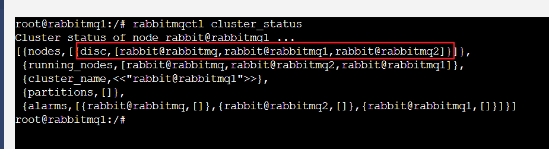
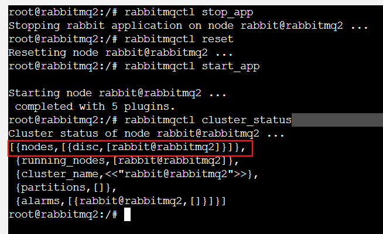

本文采用docker-compose 的方式部署 rabbitMQ集群
docker-compose.yml
version: "3"
services:
rabbitmq:
restart: always
container_name: rabbitMQ
image: rabbitmq:3.7.7-management
# 注意 hostname（本地域名）, rabbitMQ集群之间的通信就是靠此寻址的。物理机部署时也可以使用固定IP
hostname: rabbitmq
environment:
RABBITMQ_NODE_PORT: 5672
# 指定虚拟主机的名称
RABBITMQ_DEFAULT_VHOST: my_vhost
RABBITMQ_DEFAULT_USER: admin
RABBITMQ_DEFAULT_PASS: admin
# 指定 erlang_cookie, 集群中的所有节点的值必须保持一致， erlang 使用该值作为通信的密钥
RABBITMQ_ERLANG_COOKIE: rabbitmq_erlang_cookie
ports:
- 15672:15672
volumes:
- ./data/rabbit:/var/lib/rabbitmq
- ./conf:/etc/rabbitmq
rabbitmq1:
restart: always
container_name: rabbitMQ_1
image: rabbitmq:3.7.7-management
hostname: rabbitmq1
environment:
RABBITMQ_NODE_PORT: 5672
RABBITMQ_DEFAULT_VHOST: my_vhost
RABBITMQ_DEFAULT_USER: admin
RABBITMQ_DEFAULT_PASS: admin
RABBITMQ_ERLANG_COOKIE: rabbitmq_erlang_cookie
ports:
- 15673:15672
volumes:
- ./data/rabbit_1:/var/lib/rabbitmq
- ./conf:/etc/rabbitmq
rabbitmq2:
restart: always
container_name: rabbitMQ_2
image: rabbitmq:3.7.7-management
hostname: rabbitmq2
environment:
RABBITMQ_NODE_PORT: 5672
RABBITMQ_DEFAULT_VHOST: my_vhost
RABBITMQ_DEFAULT_USER: admin
RABBITMQ_DEFAULT_PASS: admin
RABBITMQ_ERLANG_COOKIE: rabbitmq_erlang_cookie
ports:
- 15674:15672
volumes:
- ./data/rabbit_2:/var/lib/rabbitmq
- ./conf:/etc/rabbitmq
集群节点之间如何通信
如上配置所示，我们并没有像之前的服务那样，使用 link 明确的标识与其他服务的链接关系。那么这是如何让 3 个节点互相通信的呢？
原来docker 1.0 版本之后，会内置一个域名服务器，可以进入容器内部查看 /etc/reslv.conf 文件，会发现 nameserver 127.0.0.11 配置。
这就是默认域名解析服务器的地址。我们在配置文件中指定了 hostname 的值,在容器启动的时候，就会向域名服务器注册信息，域名服务器会记域名与该机器ip的对应关系，后面我们在容器中使用 hostname 去访问其他服务时，便会通过域名服务器找到对应的IP是什么，从而访问该服务
目录结构
如上配置所示， 分别使用 ./data/rabbit ./data/rabbit_1 ./data/rabbit_2 作为每个节点的数据卷
使用 ./conf 作为配置文件的卷
所以有如下目录结构

其中 rabbitmq.conf 配置如下
loopback_users.guest = false
listeners.tcp.default = 5672
default_pass = admin
default_user = admin
default_vhost = my_vhost
hipe_compile = false
management.listener.port = 15672
management.listener.ssl = false
# 下面配置针对 rabbitmq-mqtt 插件, 没有开启mqtt插件的，忽略
mqtt.default_user = mqtt_user
mqtt.default_pass = Aa111111
mqtt.allow_anonymous = true
mqtt.vhost = my_vhost
enabled_plugins 配置如下
[rabbitmq_management,rabbitmq_mqtt,rabbitmq_web_mqtt].
开启了 web 端管理界面，mqtt 、 mqtt_web 插件
启动容器
检查配置正确后，启动容器
docker-compose up -d
集群配置
可以分别进入三个容器内部检查容器日志，确定全部启动成功后，进入 rabbitMQ_1 容器中，执行
rabbitmqctl stop_app
该命令会停止当前容器中的rabbitMQ 服务，rabbitMQ 是使用 erlang 语言编写的， rabbitMQ 自然要运行在 erlang 虚拟中，就像 java class 运行在 jvm 虚拟机中一样的道理。 所以上面的命令只是停止 rabbitMQ服务，erlang 虚拟机仍然在运行着。
现在我们将 rabbitMQ 作为主节点， rabbitMQ_1, rabbitMQ_2 作为从节点，把 rabbtitMQ_1 加入 rabbitMQ 中:
rabbitmqctl join_cluster rabbit@rabbitmq # rabbitmq 就是你的域名或ip地址, 前面的 rabbit@ 是固定写法
等待命令成功执行后，再执行如下命令启动 rabbit 服务
rabbitmqctl start_app
然后可以执行 rabbitmqctl cluser_status 查看节点运行状态， rabbitMQ_2 容器中重复上述步骤即可
集群状态如下:

可以看到集群中已经由三个磁盘节点了。
至于为什么叫磁盘节点，先按下不表，下篇文章再探讨， 下面我们先看一下如何让一个节点从集群中全身而退。
退出集群
在节点上执行如下命令，即可安全的让节点退出集群
rabbitmqctl stop_app
rabbitmqctl reset
rabbitmqctl start_app
这里的关键命令是 rabbitmqctl reset, 此命令清空节点状态，并将其恢复到空白状态，执行此命令时，节点会和集群中其他节点通信，告诉它们，我马上要退出集群了，这一步非常重要，不然其他节点以为当前节点是因为故障而断开的，并期望某一天一定会再回来的，同时阻止其他新的节点加入集群，直到该节点恢复。 所以当要离开集群时，务必先要重设节点状态!!!
如下:

从集群移除后，可以看到该节点已经称为独立节点了